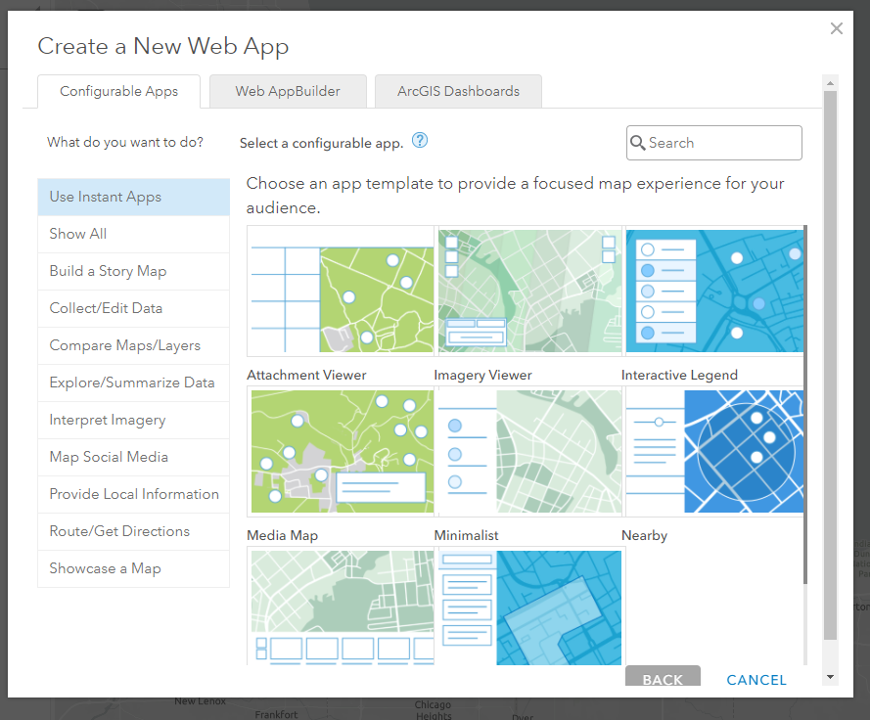
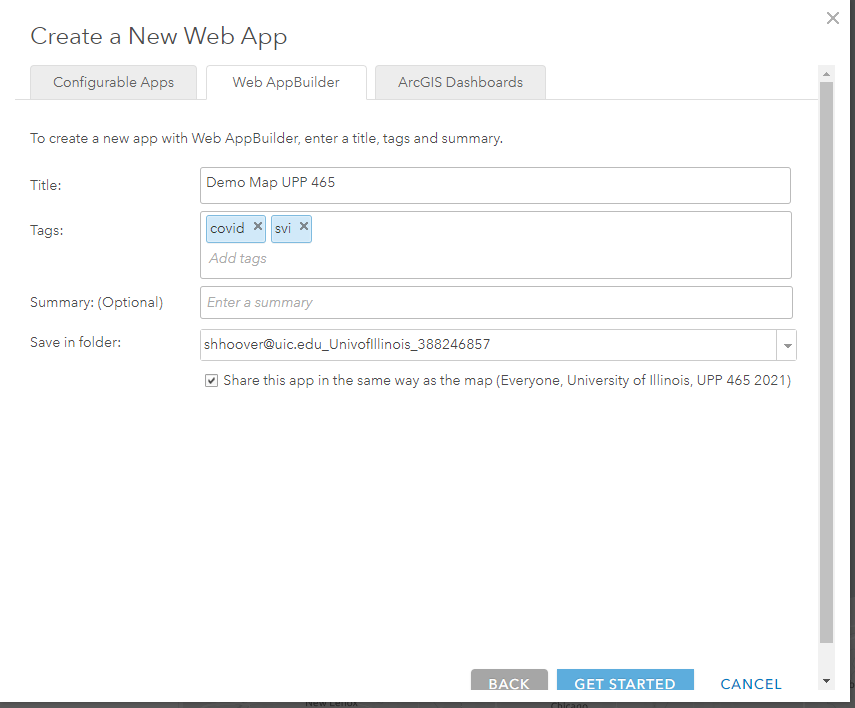
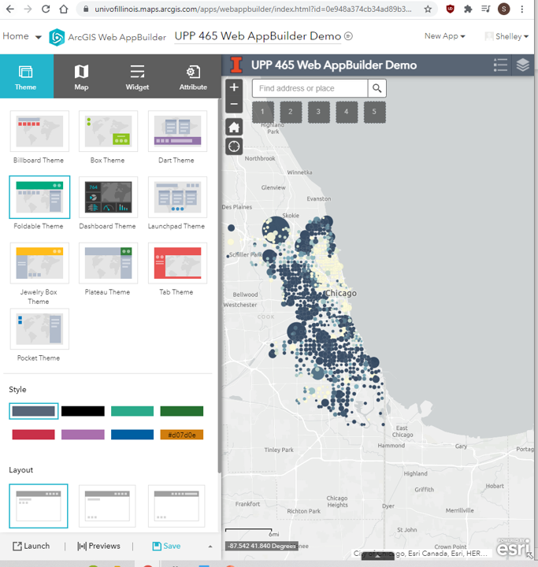
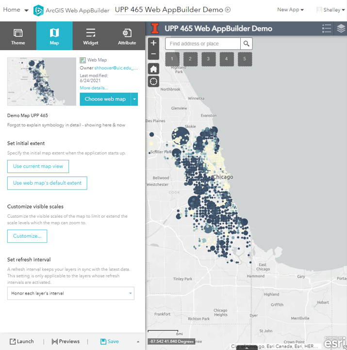
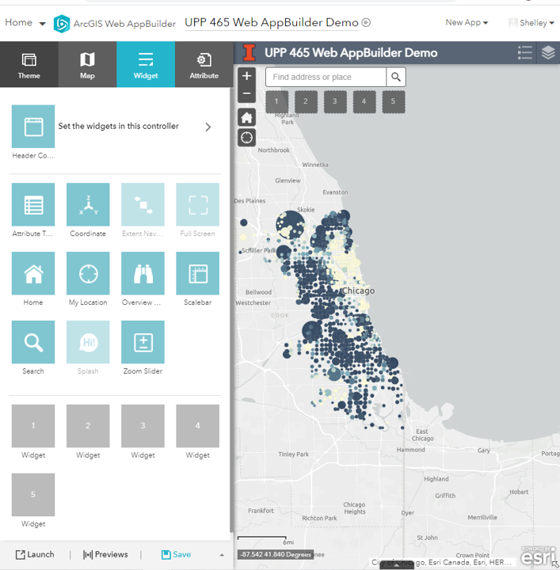
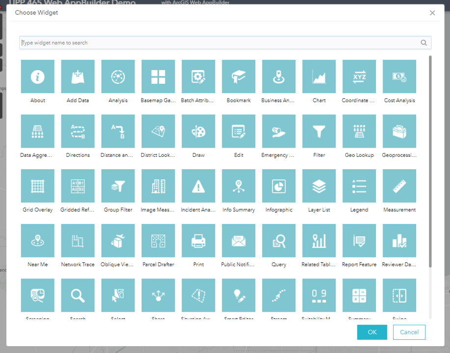
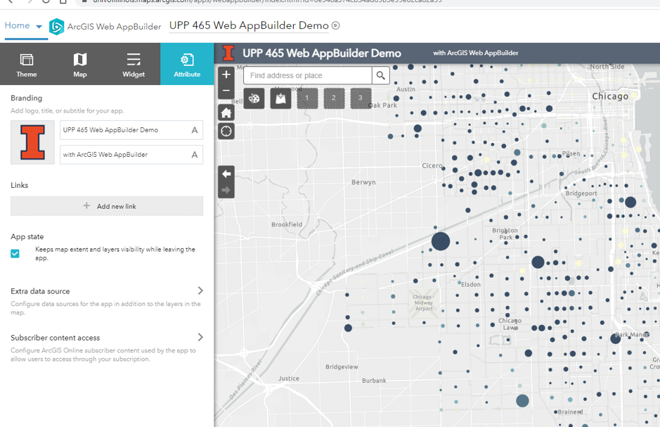
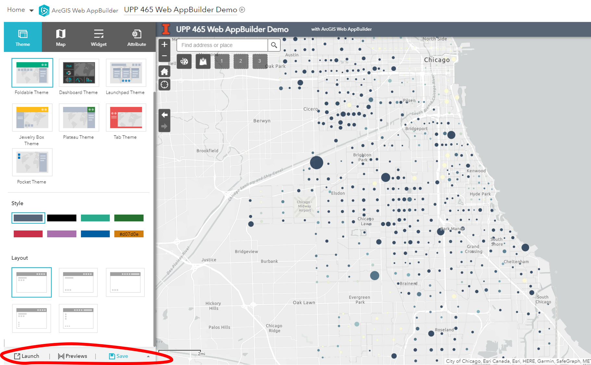
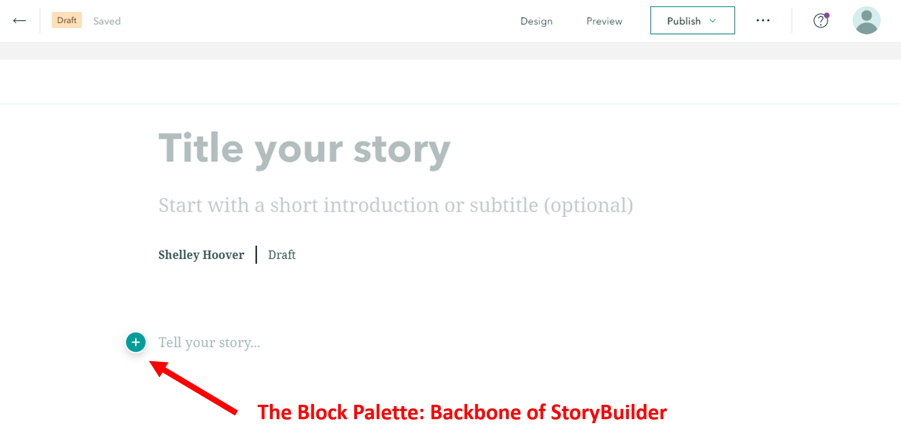
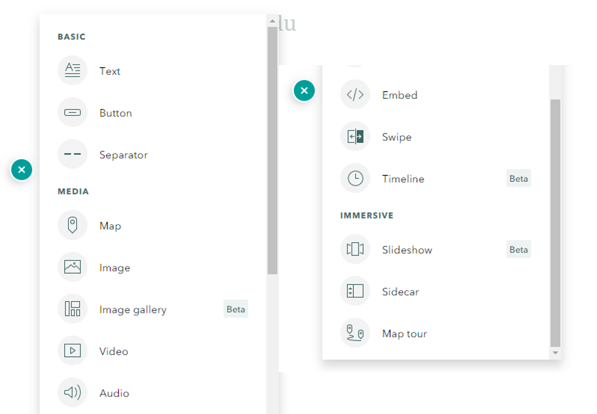

Class overview
AGOL has a lot of Apps
Map-based apps:
*Requires an organizational account.
We will review StoryMap Builder & Web App Builder today.
Next week we will cover Dashboards (and Survey123)
Homework 1: Explore available course date & make a web map
Homework 2: Take HW1 (or create new map!) & create short story map & web app
Project 1: Expand on HW2 App OR create a dashboard
As we go over the applications today, think about what you might want to do for your project. Consider:
| StoryMap Builder |
|
|---|---|
| Web App Builder |
|
| Configurable Apps |
|
| Dashboards |
|
| Survey123 |
|
Web App Builder
1. Select Web AppBuilder
2. Enter App Info
3. Theme: Choose a theme, style, and layout
4. Map: Change map, set map extent, set refresh interval
5. Widgets: Set Off-panet widgets, in-panel widgets, and header tools
6. Select in-panel widgets
7. Configure Attributes
8.Preview, Save, and Launch App
StoryMaps
ArcGIS StoryMaps StoryBuilder is New (ish)
Esri StoryMaps/Configurable Templates will be phased out:
| June 2020 |
Most major pieces of functionality from the classic templates are now represented in ArcGIS StoryMaps |
|---|---|
| July 2021 |
The classic templates will enter a three-year period of extended support. During this time, only critical maintenance updates will be made to the apps. You'll still be able to create and edit stories with the classic templates during this phase. |
| July 2024 |
Classic templates will enter the mature support phase. In this phase, no further updates will be made to the software. Classic stories you've created will continue to be available. |
Let's take a quick look at the old templates anyway.
You are strongly recommended to storyboard before starting.
Most important thing for StoryMaps:
Block Palette Options
1. Quickstart
2. From Scratch
This week's homework
Questions?